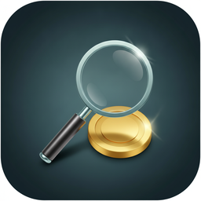

An open-source toolkit for locating, analyzing, and recovering wallet files scattered across old drives, backups, and cloud storage — Bitcoin, Litecoin, Dogecoin, and 17 more.
Built after years of not being able to find my own old mined coins. Offline-first by default, every secret stays file-only, and the whole thing is readable source — no unverifiable third-party binaries.
01 — WHAT IT FINDS
Point it at a directory, a mounted drive, or a Google Drive account. It searches for wallet-shaped files, extracts every address it can find, checks live balances, and builds a relationship graph across everything it turns up.
Full Berkeley DB parsing for Bitcoin Core-derived wallets — encrypted key detection, address enumeration, and (for unencrypted wallets) direct private-key extraction with self-verification.
Scans text and files for candidate 12/24-word seed phrases, validates them against the real BIP39 checksum, and matches them against known addresses.
Flags likely encrypted or hidden volumes on a drive so you know what's worth a deeper pass, even before you have a password for it.
hashcat-backed password recovery for Exodus's seed.seco format, which nothing else in the open-source space wraps cleanly.
A hard fork copies the whole ledger — this checks any Bitcoin address you find against Bitcoin Cash, Bitcoin SV, and Bitcoin Gold too.
OAuth-based Drive crawl, or mount a multi-terabyte Drive/GCS bucket read-only with rclone and scan it like any local directory — no full download required.
02 — BUILT SAFETY-FIRST
Every wallet-recovery tool I found either didn't do what I needed, or pulled in third-party code I couldn't verify wasn't a trojan. This project is fully readable source, and treats your keys and passwords like it means it.
Testing real passwords against a real wallet refuses to run online unless you explicitly opt in — a clear, informed choice every time, not a silent bypass.
Candidate passwords and phrases are never passed as CLI arguments or query strings — only through local files, the same discipline everywhere in the codebase.
A found password or extracted key is shown to you exactly once. It's never logged, never written to disk, and gone for good the moment you navigate away.
The local dashboard refuses to bind to anything but 127.0.0.1 — it's not reachable beyond your own machine, ever.
No compiled blobs, no closed-source dependencies claiming to "just work." Every line that touches your keys is here for you to read.
Save known/guessed passwords once, labeled, backed by Portunus — see which label matched a found password without ever re-exposing the value.
03 — THE TOOLKIT
Every tool works on its own from the command line. The local web app (python web/app.py) wraps all of them in one dashboard — scan targets, mounted drives, the password vault, and native Finder/zenity file pickers included.
Finds wallet-shaped files by extension and keyword.
Extracts addresses from whatever search found.
Checks live balances across every supported coin.
Correlates wallet data across files and coins.
Flags likely encrypted/hidden volumes on a drive.
Co-spend clustering from one known address.
Scans for candidate BIP39 phrases.
Tries candidate phrases against known addresses.
BTCRecover-backed password testing.
Deep Berkeley DB enumeration.
Checks a BTC address against fork coins.
hashcat-backed seed.seco recovery.
OAuth crawl for wallet-like files in Drive.
Self-verifying WIF extraction from unencrypted wallets.
One Markdown report per wallet.dat, start to finish.
04 — INSTALL & RUN
Full setup details (including Google Drive OAuth and optional rclone mounting) are in the README — this is the fast path.
# clone and install git clone https://github.com/mdostal/coin-finder.git cd coin-finder pip install -r requirements.txt # run the local dashboard (127.0.0.1 only) python web/app.py
WHY THIS EXISTS
"If anyone is like me and happens to stash crypto coins like a squirrel stashes nuts... often forgetting where they are.... I've created a toolset to help find wallets, check them for coins, and filter the files down to reasonable ones based on what it found on the corresponding blockchain."
SUPPORT THIS PROJECT